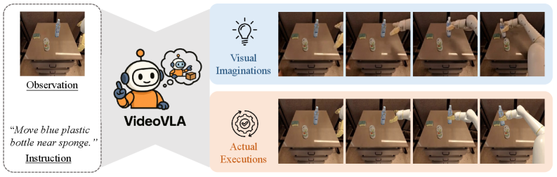
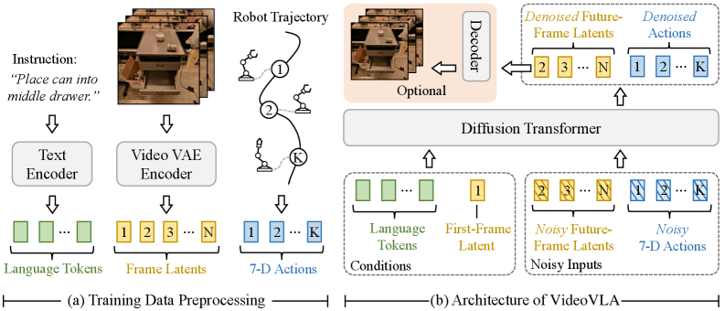
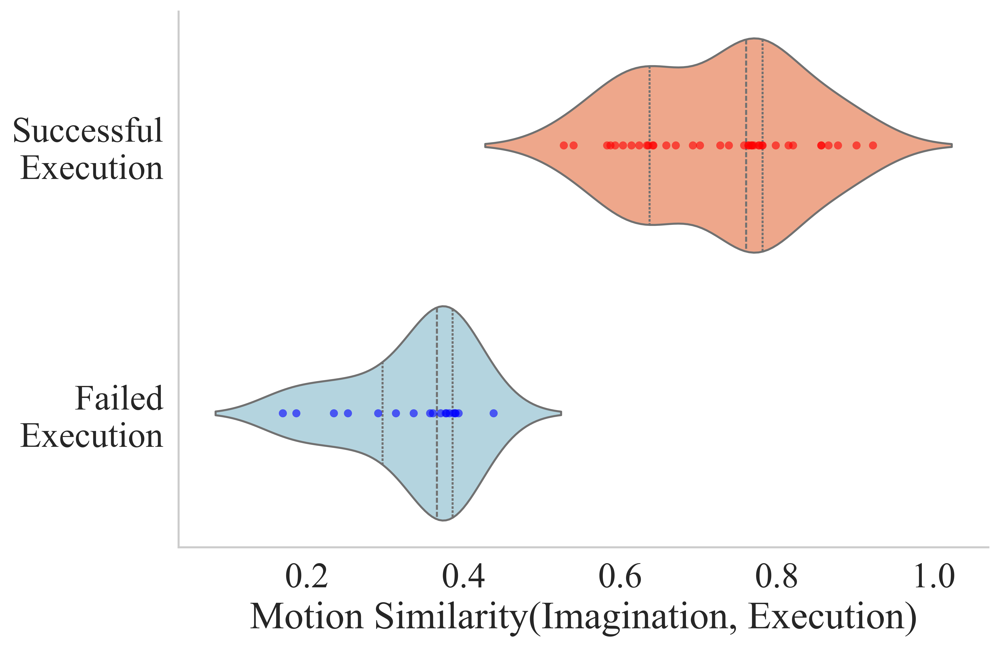
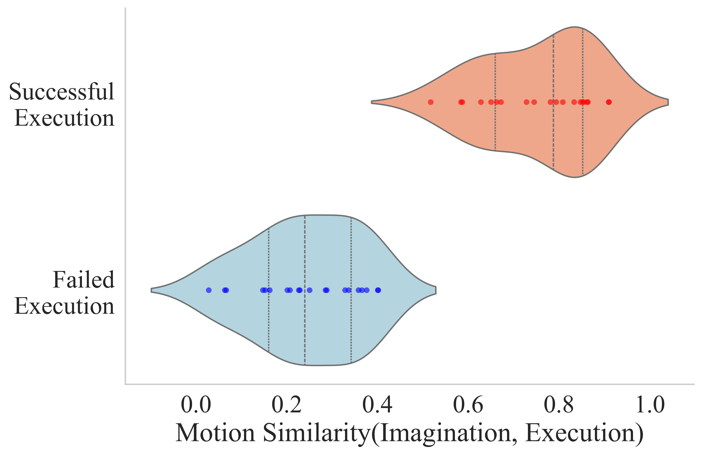
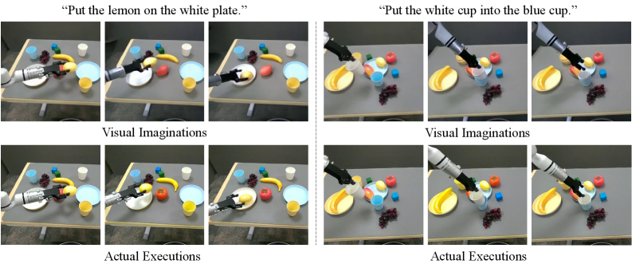
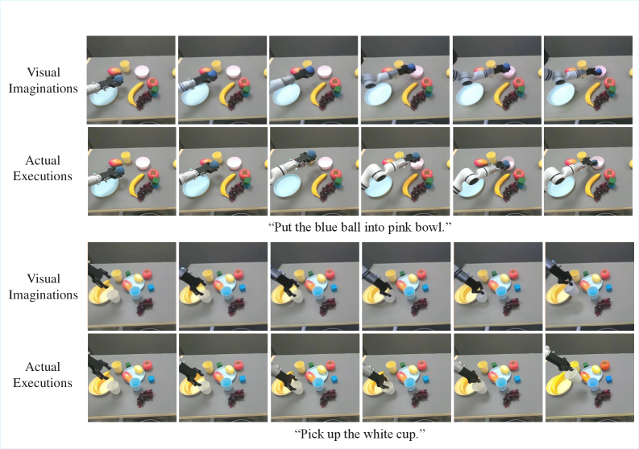
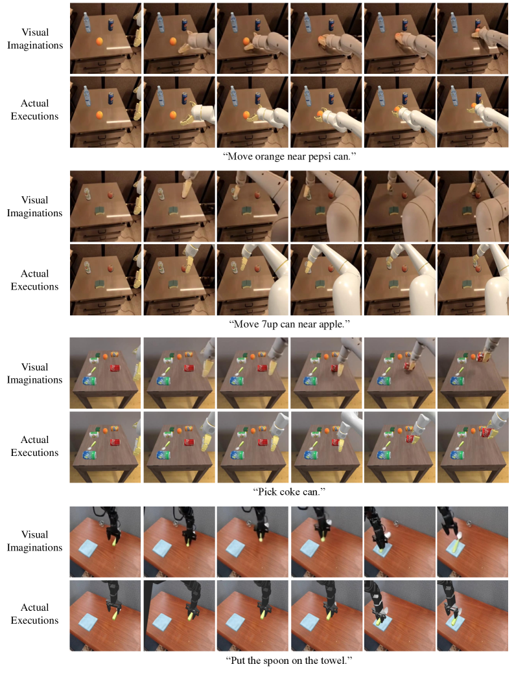

VideoVLA: Video Generators Can Be Generalizable Robot Manipulators
1. 论文速览
| 论文要解决什么 | 现有 VLA 多依赖预训练理解模型，能完成训练分布内任务，但对新任务、新物体、新 embodiment skill 的泛化仍有限；作者尝试把视频生成器的物理想象和未来状态预测能力迁移到机器人操作。 |
|---|---|
| 作者的方法抓手 | 把视频生成和动作生成统一为一个 diffusion denoising 问题：语言 token 与当前图像 latent 作为条件，未来视频 latent 和 7-D action sequence 作为共同去噪目标。 |
| 最重要的结果 | SIMPLER in-domain 全任务平均 63.0，略高于 CogACT 62.6；SIMPLER novel objects 平均 65.2，new skills 平均 48.6；真实 Realman in-domain 平均 64.6，novel objects 50.6，cross-embodiment skills 58.0，均为表中最佳。 |
| 阅读时要注意的点 | 核心不是额外生成一段视频做展示，而是用 video-action dual prediction 作为训练约束。消融显示去掉 video loss 或只预测 action，会让 in-domain 与泛化性能大幅下降。 |
难度评级：★★★★☆。需要理解 VLA、Diffusion Transformer、CogVideoX/causal video VAE、action chunking、SIMPLER 评测、机器人跨 embodiment 泛化。
关键词：VideoVLA, video generation, VLA, Diffusion Transformer, visual imagination, action chunk, CogVideoX, SIMPLER, Realman robot。
核心贡献清单
- 范式转移：从“用视觉语言理解模型做 VLA backbone”转向“用视频生成模型做 VLA manipulator”。
- 统一建模：将语言、当前视觉 latent、未来视觉 latent、动作向量放入同一个 DiT 序列，联合预测动作和视觉后果。
- 泛化证据：在 novel objects 和 unseen skills 中展示比 OpenVLA、SpatialVLA、$\pi_0$、CogACT 更强的平均性能。
- 想象-执行相关性分析：用 motion similarity 和人工判断说明更好的 visual imagination 与更高执行成功率相关。

2. 动机
2.1 要解决什么问题
机器人操作的长期目标是泛化到训练时未见的任务、物体和环境。现有 VLA 通过大规模视觉、语言或视觉语言理解模型减少任务特定机器人数据需求，但作者认为这种路线仍难充分实现 true generalization，尤其是在 novel objects 与 unseen skills 上。
视频生成模型则在 novel text / image condition 下表现出强泛化，并生成具有物理合理性的未来视频。作者观察到这与机器人操作高度对齐：机器人也需要从新指令和新视觉观测中预测物理后果，并据此组织动作。
2.2 关键假设
如果模型能生成与真实执行结果一致的“视觉想象”，那么它更可能预测出能完成任务的动作。换句话说，未来视觉结果不是额外副产物，而是动作可靠性的隐式监督和诊断信号。
4. 方法详解
4.1 问题形式化
输入为文本指令 $\mathcal{T}$ 和当前视觉观测 $\mathcal{O}$，输出两类未来量：
动作输出：未来 $K$ 步可顺序执行的 action chunk。
$$\mathcal{A}=\{\boldsymbol{a}_i\in \mathbb{R}^{7}\}_{i=1}^{K}$$| $\boldsymbol{a}_i[1:3]$ | wrist rotation。 |
| $\boldsymbol{a}_i[4:6]$ | wrist translation。 |
| $\boldsymbol{a}_i[7]$ | gripper state，0 为 closed，1 为 open。 |
视觉输出：执行动作后预期出现的未来视频帧，但实现中预测的是 latent。
$$\mathcal{F}=\{\boldsymbol{F}_j\}_{j=1}^{N}$$动作频率和视频帧频率不要求相同：每个 action 可能对应多个 future frames。执行一个 action chunk 后，机器人获得新观测，再重复预测下一段 action chunk。
4.2 总体架构
VideoVLA 主要包含两个 encoder 和一个 DiT backbone。T5 text encoder 将语言指令转为固定长度 226 个 tokens；CogVideoX 的 3D-causal VAE encoder 将视频 clip 编码成 frame latents。由于 VAE 是 causal，第一帧 latent $\boldsymbol{V}_1$ 只编码第一帧，即当前观测。

训练时，完整视频 clip 进入 video encoder，因此模型可以获得当前 latent $\boldsymbol{V}_1$ 与未来目标 latents $\{\boldsymbol{V}_j\}_{j=2}^{n}$；推理时只编码当前观测得到 $\boldsymbol{V}_1$。
4.3 数据预处理与 token 序列
对每个视觉 latent，VideoVLA 按 raster order flatten 空间维度。设 $\boldsymbol{V}'_1$ 是当前观测 latent 的 flattened 版本，$\{\boldsymbol{V}'_j\}_{j=2}^{n}$ 是未来 frame latents 的 flattened 版本。多模态序列由以下部分拼接：
所有模态先投影到共同 embedding dimension；future video latents 和 actions 都加高斯噪声，模型用 DDPM diffusion loss 学习 denoise。噪声 timestep embedding 按 DiT 方式通过 adaptive LayerNorm 注入。backbone 初始化自预训练 CogVideoX。
4.4 Unified Future Modeling
VideoVLA 的 unified future modeling 指将“未来动作”和“未来视觉后果”视为同一未来过程的两个模态，在一个 transformer 中同步建模。与模块化视频规划不同，VideoVLA 不先生成视频再通过 inverse dynamics 取动作，而是让动作 token 与视觉 token 在 denoising 中直接交互。
训练目标：对 action 和 future video latent 同时施加 diffusion denoising loss。
$$\mathcal{L}_{dual}=\mathcal{L}_{video\ denoise}+\mathcal{L}_{action\ denoise}$$论文正文没有把总损失写成单独公式，但在 dual-prediction 消融中明确说明 default 同时对两种模态使用 denoising losses。
附录进一步比较了 attention 方向和 diffusion schedule：默认 bidirectional interaction 与同步 diffusion schedule 都比 causal mask 或 asynchronous schedule 更好。附录 More Analysis
4.5 训练和推理细节
| 项目 | 论文给出的设置 |
|---|---|
| 预训练数据 | Open X-Embodiment subset，22.5M frames；OXE 原始包含 60 个 datasets、22 个 robot embodiments、超过 1M real-world robot trajectories。 |
| 真实机器人微调数据 | Realman robot teleoperation，5824 samples，覆盖 pick、stack、place 三类任务。 |
| backbone | CogVideoX-5B。 |
| 默认 horizon | 推理每步预测 13 个 future frame latents，即 49 frames，并预测 6 个 future actions。 |
| 部署执行 | 每次预测 6 个 actions，但只执行前 3 个。 |
| 训练 | 预训练 100K iterations；真实微调 15K iterations；32 AMD MI300X GPUs；batch size 256。 |
| 优化器 | AdamW，learning rate 1e-5，weight decay 1e-4。 |
| 采样 | DDIM sampling；正文写 inference 使用 50 denoising steps；附录真实部署限制中写 10 denoising steps，1.1s/H100，约 3Hz。 |
| 效率设置 | 仿真预测 13 latents/49 frames；真实实验为效率预测 4 latents/13 frames。 |
5. 实验
5.1 实验范围和评测协议
论文同时做 simulation 和 real-world，且分别包含 in-domain 与 generalization。泛化重点是两类能力：novel objects 上执行已学技能，以及把其他 embodiment 学到、目标 embodiment 没见过的 skill transfer 到目标机器人。
| 评测类别 | 任务/试验次数 |
|---|---|
| Google Robot SIMPLER-VM | Pick Up Coke Can 300；Move Near 240；Open/Close Drawer 216；Open Top Drawer and Place Apple 108。 |
| Google Robot SIMPLER-VA | Pick Up Coke Can 825；Move Near 600；Open/Close Drawer 378；Open Top Drawer and Place Apple 189。 |
| WidowX SIMPLER-VM | 四个任务各 24 trials。 |
| Novel objects / new skills simulation | 每个 novel object 25 trials；每个 new skill 20 trials。 |
| Real-world | Pick Up 24；Stack 48；Place 24；每个 novel object 12；每个 new skill 16。 |
5.2 SIMPLER in-domain
SIMPLER 中 Google robot 有 Visual Matching (VM) 和 Variant Aggregation (VA)，WidowX 只有 VM。VideoVLA 在 WidowX VM 平均、Google VA 平均和所有 12 个任务全局平均上最高，Google VM 平均为第二。
| 方法 | WidowX VM Avg | Google VM Avg | Google VA Avg | Avg All |
|---|---|---|---|---|
| RT-1-X | 1.1 | 42.7 | 30.5 | 24.8 |
| OpenVLA | 4.2 | 34.3 | 39.4 | 26.0 |
| SpatialVLA | 34.4 | 54.6 | 52.4 | 47.1 |
| $\pi_0$ | 53.1 | 53.5 | 43.4 | 50.0 |
| CogACT | 51.3 | 75.2 | 61.4 | 62.6 |
| VideoVLA | 53.1 | 73.1 | 62.8 | 63.0 |
5.3 SIMPLER novel objects
Google robot 的 Pick Up skill 在 10 个未见物体上评测，物体来自 YCB 和 GSO。VideoVLA 平均 65.2，明显高于 SpatialVLA 50.8 和 CogACT 42.4，并在 8/10 个物体上最佳。
| 方法 | Avg | 要点 |
|---|---|---|
| OpenVLA | 6.4 | 多个物体接近 0。 |
| SpatialVLA | 50.8 | 第二高；cleaner bottle 上最高 56.0。 |
| $\pi_0$ | 28.8 | 中等，但 toy airplane 为 0。 |
| CogACT | 42.4 | green cube 84.0、carrot 72.0，但多个物体较低。 |
| VideoVLA | 65.2 | green cube 96.0、carrot 84.0、eggplant 88.0、plum 80.0、tennis ball 68.0。 |
5.4 SIMPLER new skills / cross-embodiment transfer
新技能来自 WidowX robot 训练数据，但 Google robot 训练集中没有。VideoVLA 在所有技能上最佳，平均 48.6，比第二名 CogACT 20.4 高 28.2 points。
| 方法 | Put Spoon | Put Carrot | Stack Block | Take Out Apple | Flip Cup | Pour Coke | Slide | Avg |
|---|---|---|---|---|---|---|---|---|
| OpenVLA | 0.0 | 12.5 | 0.0 | 26.7 | 0.0 | 4.0 | 0.0 | 6.2 |
| CogACT | 20.8 | 41.7 | 5.0 | 43.8 | 4.0 | 20.0 | 8.0 | 20.4 |
| VideoVLA | 56.3 | 58.3 | 20.0 | 93.8 | 20.0 | 52.0 | 40.0 | 48.6 |
5.5 真实 Realman 实验
真实机器人是 Realman 7-DoF arm + gripper。所有模型先在 OXE 预训练，再用作者收集的 Realman 数据微调。in-domain 包括 pick、stack、place，其中 place 需要先 pick up 再 place，因此分别报两个阶段成功率。
| 方法 | Pick Up Avg | Stack Avg | Place Avg | Task Avg |
|---|---|---|---|---|
| OpenVLA | 8.3 | 6.3 | 14.6 | 9.7 |
| SpatialVLA | 37.5 | 20.8 | 10.4 | 22.9 |
| $\pi_0$ | 66.7 | 54.2 | 31.3 | 50.7 |
| CogACT | 75.0 | 64.6 | 35.5 | 58.4 |
| VideoVLA | 70.8 | 66.7 | 56.3 | 64.6 |
真实 novel objects 中，VideoVLA 对 12 个未见物体全部有非零成功率，平均 50.6；CogACT 第二，平均 26.9。真实 cross-embodiment skill transfer 中，VideoVLA 平均 58.0，明显高于 CogACT 35.1。
| 真实泛化设置 | OpenVLA | SpatialVLA | $\pi_0$ | CogACT | VideoVLA |
|---|---|---|---|---|---|
| Novel objects Avg | 9.6 | 14.1 | 21.8 | 26.9 | 50.6 |
| New skills Avg | 8.3 | 13.5 | 28.5 | 35.1 | 58.0 |
5.6 消融实验
| Backbone | Pick Up Coke Can | Move Near | Open/Close Drawer | Avg |
|---|---|---|---|---|
| OpenSora-1.1 | 67.7 | 57.1 | 25.9 | 50.2 |
| CogVideoX-5B trained from scratch | 18.6 | 10.8 | 9.2 | 12.6 |
| CogVideoX-5B pretrained | 92.3 | 82.9 | 66.2 | 80.4 |
| Future frames | Pick Up Coke Can | Move Near | Open/Close Drawer | Avg |
|---|---|---|---|---|
| 13 frames | 88.7 | 75.4 | 61.6 | 75.2 |
| 25 frames | 90.0 | 79.2 | 63.0 | 77.4 |
| 49 frames | 92.3 | 82.9 | 66.2 | 80.4 |
| Dual-prediction variant | In-domain Avg | Novel Objects | New Skills |
|---|---|---|---|
| Default | 80.4 | 65.2 | 48.6 |
| No video loss | 27.0 | 12.7 | 4.4 |
| Action only | 25.5 | 11.3 | 2.1 |
| 附录消融 | Pick Up | Move | Open/Close | Avg |
|---|---|---|---|---|
| Default bidirectional | 92.3 | 82.9 | 66.2 | 80.4 |
| Causal mask | 89.3 | 76.2 | 61.1 | 75.5 |
| Async train, sync inference | 87.3 | 74.1 | 60.2 | 73.8 |
| Async train, async inference | 84.7 | 70.8 | 57.4 | 71.0 |
这些消融支持三点：预训练视频生成 backbone 很关键；更长未来视频 horizon 有利于动作后果推理；动作和视频的双向、同步联合 denoising 比分阶段或单向信息流更好。附录 More Analysis
5.7 Imagination-Execution Correlation
作者记录执行预测动作时的真实视频帧，并将预测 video latents 经 VAE decoder 得到 imagination frames。然后用 SIFT 在首帧抽 keypoints，用 SAM 分割 foreground，只保留机器人和物体区域，再用 SAM-PT 跟踪关键点轨迹。通过 Hungarian matching 对齐 imagination 与 execution 轨迹后，计算 trajectory vectors 的 normalized cosine similarity，平均后得到 robot motion similarity。


| Metric | Novel Objects | New Skills |
|---|---|---|
| Visual Imagination Success Rate | 84.0 | 63.4 |
| Actual Execution Success Rate | 65.2 | 48.6 |
视觉想象由人工判断：成功需满足语义跟随指令，且没有显著几何畸变或物理合理性违背。实际执行低于想象成功率，作者归因于精确 physical grounding、actuation noise 和 perception errors 的额外难度。



6. 可复现审计
代码与模型
有官方代码入口：VideoVLA-Project/VideoVLA。README 提供 `build.sh` 环境准备、CogVideo T5/VAE checkpoint 配置，以及 `sample_video_action.py` 推理命令。项目页提供模型链接到 Hugging Face。
| 复现项 | 论文/项目给出的信息 | 状态 |
|---|---|---|
| 模型结构 | CogVideoX-5B backbone；T5 text encoder 226 tokens；3D-causal VAE video encoder；7-D action vector；DiT unified token sequence。 | 较充分 |
| 训练超参 | 100K pretraining、15K finetuning、32 AMD MI300X、batch 256、AdamW、LR 1e-5、WD 1e-4、DDIM sampling。 | 较充分 |
| 数据 | OXE subset 22.5M frames；真实 Realman 5824 samples。真实数据是否公开未在 README 中明确给出。 | 公开复现受限 |
| 评测协议 | 正文和附录给出 SIMPLER / real-world trial counts，任务列表和主要结果。 | 充分 |
| 完整训练成本 | 32 AMD MI300X 和大型 CogVideoX backbone。 | 成本高 |
7. 分析、局限与边界
7.1 这篇论文最有价值的地方
基于论文自己的证据，最有价值之处在于把“视频生成器的未来视觉建模能力”转成机器人策略训练信号，而不是把视频生成器当作外部 planner。dual-prediction 消融显示：只保留 action 或去掉 video loss，in-domain 和泛化都大幅下降，这直接支持“视觉想象参与训练”是核心因素。
7.2 结果为什么站得住
结果横跨仿真和真实、in-domain 和 generalization，并且在 novel objects 与 cross-embodiment skill transfer 中都报告了强对比。backbone 消融、future frames 消融、dual-prediction 消融、causal mask 消融、diffusion schedule 消融共同约束了替代解释：不是单纯模型大，也不是单纯 action diffusion，而是预训练视频生成 backbone 加联合未来建模共同起作用。
7.3 作者明确写出的限制
附录指出主要限制是推理速度。真实部署中，VideoVLA 预测 4 个 future latents（13 frames）和 6 个 future actions（执行前 3 个），使用 10 个 DDIM denoising steps，在单张 H100 上约 1.1 秒，因此有效控制频率约 3 Hz。作者认为瓶颈来自大型预训练视频生成器 CogVideoX-5B，并提出未来可通过机器人定向小型视频生成器、one-step denoising（如 ShortCut）和蒸馏加速。附录 Limitations and Broader Impacts
7.4 适用边界
- 方法适合需要预测视觉后果的桌面操作任务；对高频闭环、快速接触、精细力控任务，当前 3 Hz 控制频率可能不足。
- 完整训练依赖大规模 OXE 数据、CogVideoX-5B 和 32 张 MI300X，普通实验室更可能复现推理或小规模微调。
- 真实机器人数据集规模为 5824 samples，且任务集中在 pick、stack、place；真实开放世界泛化仍需要更大范围验证。
- imagination success 依赖人工判断，说明视觉想象质量目前尚缺少完全自动化、标准化的评测指标。